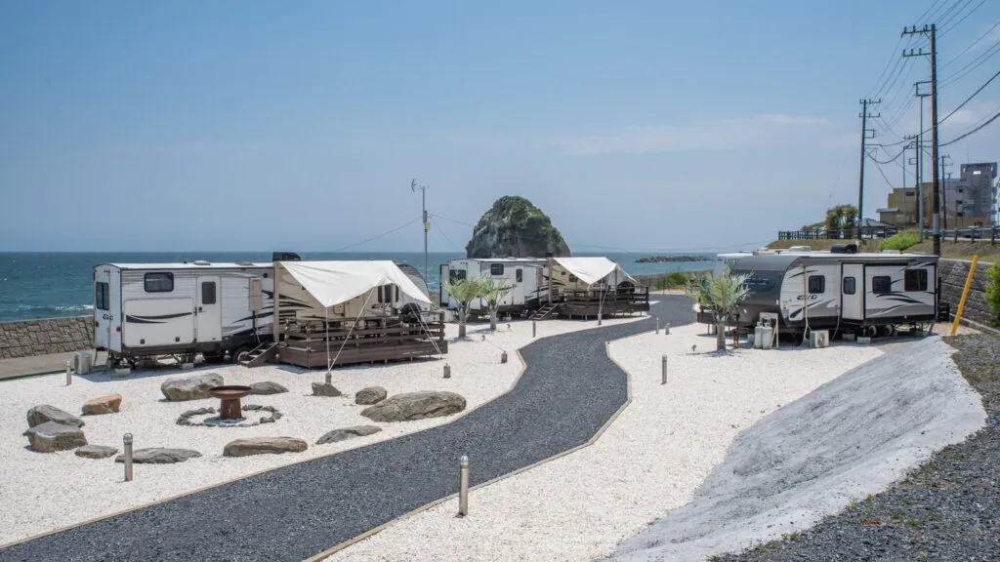
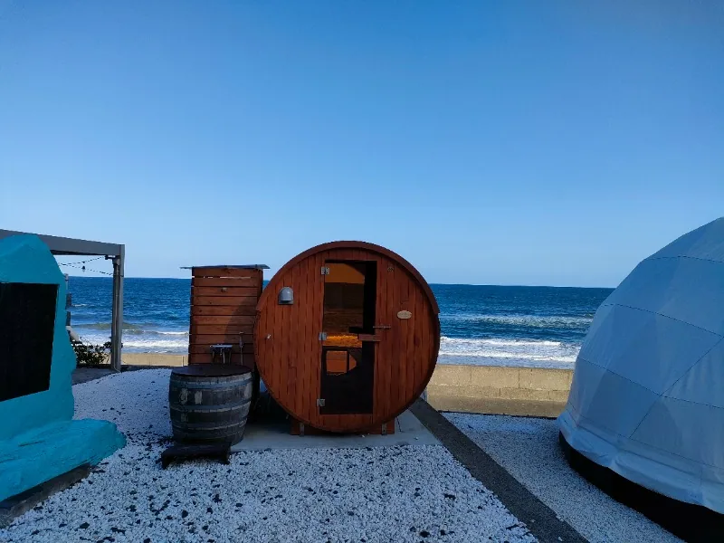
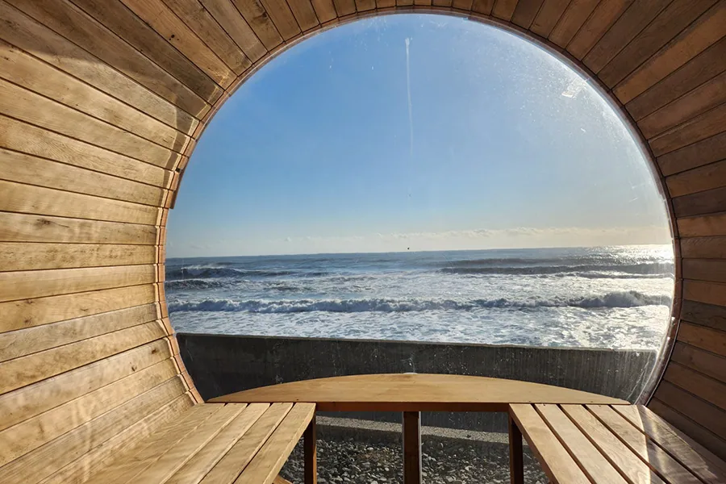

東京からわずか2時間の距離にありながら、
壮大な自然と磯原海岸の絶景を楽しむことができる『グランピングヴィレッジIBARAKI』。
2020年10月3日にオープンしたこの施設は、
水平線に昇る朝日の美しい景色を背景に、非日常の贅沢な時間を過ごせます。
今回は、心をリフレッシュするのに定評のある、
グランピングヴィレッジIBARAKIのバレルサウナについてご紹介します。
茨城・磯原エリアで海を感じる贅沢！茨城磯原のグランピングヴィレッジIBARAKI

『グランピングヴィレッジIBARAKI』は、東京から2時間という近さにありながら、
茨城県磯原エリアの美しい自然と壮大な海岸の景色を堪能できるラグジュアリーグランピング施設です。
2020年10月にオープンして以降、水平線に昇る朝日の美しい景色を望むことができる温浴施設と、
ユニークな宿泊体験がゲストから高い評価を受けています。
また、宿泊施設には、
半円形型大型のドームテント、
3種類のトレーラー宿泊（スタンダード、ラグジュアリー、そしてペットと泊まれるドッグタイプ）。
さらにはオーシャンビューを堪能できるヴィラが用意されています。
もちろん、どの部屋もエアコンが完備されているため、四季を問わず快適に過ごせます。
グランピングヴィレッジIBARAKIの魅力はなんといっても、
壮大な磯原海岸の絶景を目の前にした絶好のロケーション。
大きな波音と波しぶきが感じられるほど海との距離が近いのが特徴で、
大自然の中での非日常感満載のグランピングを体験できますよ。
グランピングヴィレッジIBARAKIの特別仕様：バレルサウナで太平洋絶景を一望

グランピングヴィレッジIBARAKIがさらなる非日常体験を求めて昨年導入したバレルサウナ。
他のどことも違う特別な仕様と魅力を持っています。
まず注目すべきは、サウナの奥の一面が半球パノラマ窓となっている点。
ここから、壮大な太平洋の絶景が目の前に広がります。
熱の中、汗を流しながら絶景を堪能する時間は、まさに非日常の中の非日常。
その絶景を楽しむための空間も考慮されており、広々とした室内には対面ベンチを設置。
バレルサウナ特有の窮屈感を感じさせない空間デザイン。最大で６人が同時に利用しても広々です。
ストーンストーブは、蓄えた熱をゆっくりと放出し、
バレルサウナ特有の蒸し蒸しとした心地よい暖かさを提供します。
その上、その繊細なデザインが空間に更なる高級感を添えています。
セルフロウリュも可能という点も特筆すべき。
ストーンの香りと蒸発した際のさざ波のような音が、耳からも心地よい癒しをもたらします。
海との一体感を感じるバレルサウナ体験

グランピングヴィレッジIBARAKIのバレルサウナ。
通常のサウナとは一味違う極上のバレルサウナ体験を提供しています。
まず、バレルサウナの中から海の絶景を眺めることができます。
海の景色を楽しみながらのサウナ体験は心地よい一体感をもたらし、
滞在体験をより格別なものに！
さらに、心地よい潮風を感じながらの外気浴もでき、
温かさと涼しさが同時に体を包み込む至福のリラクゼーションを提供しています。